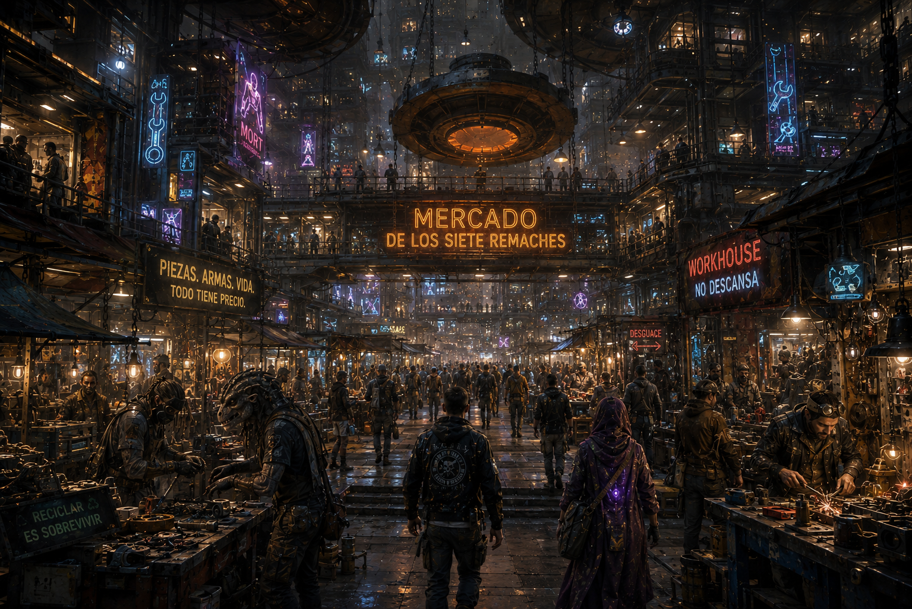

MÓDULO — La deuda del mercado bajo
Colección de one-shots de MadCity — episodio 4 de 6. Estado: BORRADOR, pendiente de playtest.
«No debes nada por respirar. El alquiler del aire se cobra mañana.»

El Mercado de los Siete Remaches, hoy sin abrir la persiana del todo.
Resumen operativo — léelo antes de dirigir
Premisa: el Mercado de los Siete Remaches no ha abierto la persiana esta mañana. Alguien ha robado el registro cifrado de deudas y favores que sostiene medio mercado — no es un libro de cuentas frío, es la memoria de quién le cubrió un turno a quién, quién prestó una herramienta, quién adelantó una medicina. La ladrona es Tamsin Voro, una aprendiz que solo quería borrar una deuda injusta heredada de su familia. Al abrir el registro descubrió dos cosas que no esperaba: que su custodio ha estado protegiendo en secreto a familias vulnerables alterando algunas entradas, y que un intermediario vinculado al mercado negro ha colado deudas predatorias disfrazadas de acuerdos comunitarios.
Duración: una sesión de 4-6 horas. Escala local: un mercado, un puñado de deudas concretas con nombre y cara, tres cobradores contratados. Esto no decide el destino de MadCity.
Qué saben los PJ: que el Mercado de los Siete Remaches sigue cerrado, que corre el rumor de un robo, y que la gente está más preocupada por sus propios acuerdos pendientes que por encontrar un culpable.
Verdad del Narrador: no hay villano limpio. Tamsin robó por una razón comprensible; Karel quiere el registro de vuelta porque sin él el mercado deja de confiar; el custodio original mintió por protección, no por beneficio propio; el intermediario de Mort sí actúa con intención predatoria, pero incluso él cree que solo está haciendo negocios normales.
Objetivo inmediato: recuperar (o decidir qué hacer con) el registro antes de que el mercado abra su siguiente turno y varios acuerdos deban liquidarse.
Pregunta de fondo: ¿qué es una deuda cuando no hay banco de por medio — solo memoria, confianza y la palabra de alguien?
Si nadie interviene: el mercado abre igualmente, pero sin el registro los comerciantes congelan preventivamente préstamos y herramientas compartidas. Nadie muere, pero el tejido de confianza que sostiene el Mercado de los Siete Remaches se resiente durante semanas.
Desarrollo en cinco escenas
- La persiana no sube — mercado detenido, robo descubierto y primeras acusaciones.
- Favores que pesan — hablar con deudores, custodios y comerciantes.
- La ruta de las reparaciones — persecución breve por talleres, conductos y la Pasarela de las Mil Fachadas.
- La deuda dentro de la deuda — confrontar a Tamsin y descubrir las dos manipulaciones.
- Abrir el mercado — decidir el destino del registro.
Panel del Narrador — léelo antes de sentarte a la mesa
Reloj — hasta la apertura del siguiente turno del mercado:
| Tiempo | Qué ocurre |
|---|---|
| H+0:00 | El mercado no abre. Escena 1 empieza aquí. |
| H+0:30 | Los rumores sobre el robo ya circulan por todo el mercado — cada comerciante tiene su propia teoría. |
| H+1:30 | Casimir Dray, el intermediario de Mort, empieza a mover a sus cobradores para recuperar el registro por su cuenta antes que nadie más. |
| H+2:30 | Última ventana razonable para encontrar a Tamsin antes de que decida destruir el registro por miedo, convencida de que no hay salida limpia. |
| H+3:00 | El turno siguiente empieza a formarse en las entradas del mercado. Sin resolución, los comerciantes empiezan a congelar preventivamente préstamos y herramientas — Escena 5 se juega con esta presión encima. |
Cómo avanza el tiempo de ficción: no lo simules minuto a minuto — avanza el reloj cuando los PJ cambien de zona del mercado, investiguen a fondo, o esperen una respuesta.
- Hablar con un comerciante o deudor: 5-15 min, según cuánto quiera contar.
- Moverse entre puestos del mercado: 5 min.
- Mercado → Pasarela de las Mil Fachadas (persecución, Escena 3): 10-15 min de ruta normal, menos si se corta camino por un taller o conducto conocido.
- Confrontar a Tamsin con calma en vez de por la fuerza: 15-20 min, pero evita que destruya el registro por pánico.
Las tres partes, en una frase:
- Karel «Tres Llaves» → recuperar el registro porque sin él el mercado deja de confiar en los acuerdos informales.
- Casimir Dray → recuperar el registro porque ahí están sus deudas predatorias disfrazadas, y no quiere que salgan a la luz.
- Tamsin Voro → borrar una deuda injusta sin que nadie salga perjudicado — objetivo que ya se le ha complicado más de lo que esperaba.
No hay villano de manual. Casimir es el que más se acerca, pero incluso él cree sinceramente que sus términos son "de mercado" — no se ve a sí mismo como depredador. La violencia solo aparece si sus cobradores se sienten acorralados sin salida.
La deuda, en mesa — hazla física, no abstracta: cada deuda importante de este módulo tiene un objeto, una cara y un plazo concretos — un taladro sin devolver, un turno cubierto durante una enfermedad, una medicina adelantada para un nieto, un tejado de puesto reparado sin cobrar. Evita hablar de "deudas" en abstracto o en cifras de PC salvo cuando sea explícitamente el dinero de Casimir — el resto del mercado no funciona con números, funciona con memoria y con objetos que se pueden señalar.
Textura de mercado (1d6, para ambientar sin planificar): úsala dos o tres veces a lo largo de las Escenas 1 y 2.
| d6 | Momento |
|---|---|
| 1 | Un comerciante intenta cobrar un favor viejo a un PJ que nunca ha estado allí — confusión con otra persona. |
| 2 | Dos vecinos discuten en voz alta sobre quién le debe a quién un turno de limpieza del conducto principal — uno alega que todavía "está pagando" la reparación de urgencia que un técnico le hizo gratis durante la fiesta del Glass-Dog. |
| 3 | Alguien ofrece a los PJ un trato claramente ventajoso a cambio de "un pequeño favor más adelante". |
| 4 | Un niño reparte agua entre los puestos cerrados, cobrando en historias en vez de en PC — la mejor es la del ascensor de la Línea 25 que "desapareció trece minutos", que él jura que fueron horas. |
| 5 | Un vendedor cuenta, sin que nadie se lo pida, una versión completamente distinta del robo. |
| 6 | Karel repara algo gratis para alguien que claramente no puede pagar, sin decírselo a nadie. |
Lo que ocurrió realmente
Verdad completa
Tamsin Voro, aprendiz del Mercado de los Siete Remaches, robó el registro cifrado de deudas y favores porque quería borrar una deuda que su familia arrastraba desde hace años — una deuda que ella considera injusta, contraída por su madre en un momento de necesidad real. Al abrir el registro con ayuda de Reko Ansa, su amigo y cómplice, descubrió dos cosas que no esperaba.
Primero: el custodio anterior del registro modificó, con el tiempo, algunas entradas para proteger a familias vulnerables — reduciendo o retrasando deudas de quien claramente no podía pagar, sin decírselo a nadie. Una forma de justicia silenciosa, técnicamente una falsificación.
Segundo: Casimir Dray, intermediario vinculado al mercado negro de Mort, ha estado introduciendo deudas predatorias en el registro disfrazadas de acuerdos comunitarios normales — préstamos con condiciones muy superiores a las habituales del mercado, aprovechando la confianza que la gente deposita en el sistema informal.
Tamsin no sabe qué hacer con lo que ha descubierto. Karel quiere el registro de vuelta porque sin él el mercado entero pierde su forma de recordar los acuerdos. Casimir quiere recuperarlo antes de que alguien note sus entradas. Ninguna solución deja intactas la confianza, la justicia y la supervivencia económica del mercado a la vez.
Qué saben los PJ y qué no
Pueden llegar a saber todo lo anterior investigando. Lo que no deben poder resolver desde el principio es si el robo fue un acto egoísta o desesperado — eso se aclara, con matices, en la Escena 4.
Tono
Investigación social cálida y tensa a la vez — mucha gente real con necesidades reales, poca violencia, ninguna solución perfecta. El mercado debe sentirse vivo y concreto, no como telón de fondo.
Reparto y relaciones
Karel «Tres Llaves» — técnico Nakel y mediador
Aspecto: rápido, impaciente, mucho más limpio de lo que permite su taller habitual; hoy más serio de lo normal, con las manos manchadas de grasa incluso sin estar reparando nada.
PNJ interpretable (4-5 profesiones), compartida con el resto de la colección — misma ficha ya publicada en El Glass-Dog que nadie vio.
F30/A45/P55/V45 | PV 15/15/15 | Bld 0 | Mecánica/Reparación 65% | Alerta 55% | Sigilo 40%
- Quiere que los acuerdos informales sigan siendo fiables — sin el registro, el mercado empieza a desconfiar de todo.
- Falla previsible: oculta lo que sabe para proteger a su gente, incluso cuando compartirlo ayudaría.
- Sin PJ: intenta encontrar a Tamsin por su cuenta, sin éxito garantizado, mientras Casimir se le adelanta.
Tamsin Voro — la aprendiz
Aspecto: dieciocho o diecinueve años, manos ya curtidas de aprendiz de taller, mirada de quien ha tomado una decisión de la que ya no está segura.
PNJ interpretable (2-3 profesiones), sin ficha de combate relevante.
Mecánica 35% | Sigilo 40%
- Quiere borrar la deuda de su familia sin que nadie más salga perjudicado — objetivo que ya no controla del todo.
- No es una ladrona profesional: actuó movida por desesperación, no por cálculo.
- Sin PJ: si nadie la encuentra antes de H+2:30, destruye el registro por miedo, convencida de que no hay salida limpia.
Reko Ansa — el amigo cómplice
PNJ funcional (1-2 profesiones). Ayudó a Tamsin por lealtad, no por convicción propia; es quien más rápido cedería si alguien le ofrece una salida razonable para ambos.
Sigilo 35% | sin ficha de combate relevante.
Yara Solt y Ben Achara — mediadores del mercado
PNJ funcionales (2 profesiones cada uno). Gestionan el día a día del mercado en ausencia del registro; Yara es pragmática y quiere una solución rápida, Ben insiste en hacer las cosas "como se debe", aunque tarde más.
Social 45% cada uno | sin ficha de combate relevante.
Casimir Dray — intermediario de Mort
Aspecto: traje de corte caro para el barrio en el que se mueve, sonrisa fácil que no llega a los ojos, siempre con alguien más cerca de lo estrictamente necesario.
PNJ interpretable (4 profesiones). Vinculado al mercado negro de Mort; cree sinceramente que sus términos son "de mercado", no depredadores.
F25/A30/P45/V45 | PV 14/14/14 | Bld 1 | Social/Negociación 60% | Intimidación 45%
- Quiere el registro de vuelta antes de que alguien note sus entradas predatorias.
- No ordenará un ataque abierto en pleno mercado — prefiere presión y amenaza velada a la violencia directa.
- Sin PJ: sus cobradores localizan a Tamsin casi a la vez que cualquiera que la busque, y negocian (o fuerzan) la devolución del registro a su manera.
Marro Kest y dos cobradores
Aspecto: equipamiento estandarizado, sin nada personal a la vista — la única seña de para quién trabajan de verdad es un distintivo gris oscuro y fucsia cosido por dentro del cuello, visible solo si alguien se acerca demasiado.
PNJ funcionales (2 profesiones cada uno, fuerza fija — no crece con el número de PJ). Trabajan para Casimir; profesionales, no sádicos.
F35/A35/P30/V30 | PV 15/15/15 | Bld 2 | Sin Armas 50% | Daño 6 (no letal por defecto)
- Suben la apuesta solo si los acorralan sin salida — igual que en el resto de la colección, la violencia aquí es síntoma de mala gestión, no el plan.
Deudas concretas del mercado (usa dos o tres, no todas)
- Iolanda, vendedora de telas, le reparó gratis el tejado del puesto a un vecino enfermo — el registro decía que ese vecino "debía" a Iolanda un tejado nuevo, no dinero.
- Vieja Mérida adelantó su ración de medicina a su nieto hace meses; el registro lo anotaba como favor pendiente de devolver "cuando se pueda", sin plazo fijo — una de las entradas que el custodio anterior protegió.
- Tor Ilven, herrero, prestó un taladro industrial hace un año y nunca lo recuperó — uno de los pocos casos donde la deuda es simplemente eso: un objeto concreto sin devolver, sin drama añadido.
Relaciones para el Narrador
- Karel y Tamsin se conocen del taller; él la trató siempre como aprendiz de confianza, lo que hace su decisión más dolorosa para ambos.
- Casimir y Karel se toleran en público y desconfían en privado — Karel sabe qué es Casimir, pero no tiene pruebas limpias.
- Reko seguiría a Tamsin a cualquier parte, pero preferiría no tener que hacerlo.
- Los mediadores (Yara y Ben) representan dos formas distintas de gestionar la crisis: rapidez frente a procedimiento.
Lugares necesarios
Mercado de los Siete Remaches: puestos cerrados, el Muro de las Respuestas con las Dos Voces respondiéndose desde hace años. Centro de las Escenas 1, 2 y 5.
Talleres y conductos cercanos: rutas de trabajo y mantenimiento que conectan el mercado con el resto del gajo. Escenario de parte de la persecución de la Escena 3.
Pasarela de las Mil Fachadas: tramo final de la persecución, compartido con El Glass-Dog que nadie vio.
Escondite de Tamsin: un rincón discreto, probablemente en los mismos talleres o conductos — no necesita ser un lugar nuevo con nombre propio.

Diagrama esquemático, no ilustración — el Mercado y la Plaza no tienen conexión directa; solo vía Pasarela o, con transbordo, por la Línea Vertical 25.
Las cinco escenas
Cada escena está pensada para dirigirse sola, sin buscar en otra parte del documento durante el juego — las fichas relevantes están repetidas dentro.
Escena 1 — La persiana no sube
Atmósfera:
El Mercado de los Siete Remaches, en silencio a una hora en que debería estar lleno de voces regateando. Una persiana a medio subir. Y un grupo pequeño de comerciantes discutiendo en voz baja junto a la oficina del registro, como si hablar alto fuera a empeorar las cosas.
Qué está ocurriendo: el mercado no ha abierto. El robo del registro se ha descubierto hace poco y las primeras acusaciones ya circulan.
PNJ presentes, con su intención inmediata:
- Yara Solt y Ben Achara — intentan gestionar la crisis sin que cunda el pánico; Yara quiere una solución rápida, Ben quiere hacerlo "bien" aunque tarde (fichas: ver Reparto).
- Karel «Tres Llaves» — ya está allí, más serio de lo normal, evitando dar su opinión sobre quién pudo hacerlo (Aspecto y ficha: ver Reparto).
- Comerciantes y deudores, como comunidad, con reacciones variadas — preocupación, indignación, o silencio incómodo de quien tiene algo que ocultar.
Qué saben / qué dicen: el registro ha desaparecido de la oficina custodiada; nadie vio entrar ni salir a nadie sospechoso a plena luz.
Obstáculos y acontecimientos: usa la Textura de mercado (1d6, arriba) una vez si hace falta llenar el momento.
Tiradas posibles (ninguna obligatoria):
- Investigación o Alerta (examinar la oficina del registro): éxito → encuentras una marca de herramienta de taller en la cerradura forzada, apuntando a alguien con acceso técnico; fallo → confirmas el robo, sin pista adicional.
- Social (hablar con los comerciantes presentes): éxito → alguien menciona, sin darle importancia, que Tamsin no ha aparecido hoy — la primera pista real; fallo → solo rumores contradictorios.
Si los PJ no hacen nada: Karel empieza a preguntar por su cuenta, con más lentitud que un grupo dedicado.
Cómo termina: el grupo tiene una primera pista (la marca de herramienta, la ausencia de Tamsin, o ambas) y decide cómo seguir investigando.
Después: cuánta confianza ganaron aquí con los comerciantes condiciona cuánto cuentan en la Escena 2.
«Aquí no hace falta un banco. Hace falta que la gente se acuerde. Y ahora no se acuerda nadie de nada.»
Escena 2 — Favores que pesan
Atmósfera:
Puesto por puesto, la misma pregunta cambia de forma cada vez: no es "¿quién robó?", es "¿qué me deben, y a quién se lo debo yo?". El registro no era una lista. Era la memoria de un barrio entero.
Qué está ocurriendo: investigación entre deudores, comerciantes y custodios para entender qué sostenía realmente el registro — y para acercarse a Tamsin.
PNJ presentes, con su intención inmediata:
- Iolanda, Vieja Mérida, Tor Ilven — cada uno con su deuda concreta (ver Reparto), dispuestos a hablar si se les trata con respeto, no como sospechosos.
- Karel, si acompaña — conoce a casi todo el mundo aquí y puede abrir puertas que un forastero no abriría solo.
- Casimir Dray, si ronda la zona — observa desde la distancia, sin intervenir directamente todavía (Aspecto y ficha: ver Reparto).
Qué saben / qué dicen: hablando con suficiente gente, queda claro que el registro protegía a algunos deudores más de lo esperado — la primera señal de las entradas modificadas del custodio anterior.
Tiradas posibles:
- Social (ganarse la confianza de los comerciantes): éxito → alguien confirma haber visto a Tamsin y Reko cerca de los talleres hace unas horas; fallo → la gente protege a los suyos por instinto, sin mentir directamente.
- Investigación (cruzar varias historias de deudas): éxito → detectas que algunas entradas no encajan con la lógica normal del mercado — demasiado protectoras o demasiado duras; fallo → confirmas que el registro era complejo, sin identificar el patrón todavía.
- Alerta (notar a Casimir si está presente): éxito → reconoces que su interés en el tema es demasiado insistente para ser casual; fallo → pasa desapercibido.
Si los PJ no hacen nada: los cobradores de Casimir llegan a la misma pista de los talleres casi al mismo tiempo, con menos escrúpulos para conseguirla.
Cómo termina: el grupo tiene la ubicación aproximada de Tamsin y una primera idea de que el registro escondía más de una capa de manipulación.
Después: la calidad de la información conseguida aquí determina si la Escena 3 empieza con ventaja o ya en marcha.
Escena 3 — La ruta de las reparaciones
Atmósfera:
Talleres medio vacíos, conductos de mantenimiento que huelen a metal caliente, y al fondo, dos siluetas que corren en cuanto ven que alguien se acerca demasiado.
Qué está ocurriendo: persecución breve hacia Tamsin y Reko, con los cobradores de Casimir moviéndose en paralelo si llegaron antes o al mismo tiempo.
PNJ presentes, con su intención inmediata:
- Tamsin y Reko — huyen, asustados, sin intención de hacer daño a nadie.
- Marro Kest y dos cobradores, si Casimir ya está en juego — buscan recuperar el registro por la fuerza si hace falta, aunque prefieren evitarlo en público.
Marro Kest y cobradores F35/A35/P30/V30 | PV 15/15/15 | Bld 2 | Sin Armas 50% | Daño 6 (no letal por defecto)
Trabajan para Casimir; profesionales, no sádicos. Suben la apuesta solo si los acorralan sin salida — la violencia aquí es síntoma de mala gestión, no el plan. Objetivo: recuperar el registro, no herir a nadie. Se retiran si el incidente amenaza con volverse público o si quedan Heridos.
Qué saben / qué dicen: nada nuevo — escena de acción y decisión, no de información.
Obstáculos y acontecimientos: los talleres y conductos son estrechos; correr sin cuidado puede volcar equipo o alertar a más gente de la que conviene.
Tiradas posibles:
- Atletismo o Acrobacias (seguir el ritmo de la persecución): éxito → alcanzas a Tamsin y Reko antes que los cobradores; fallo → llegas a la vez que ellos, complicando la Escena 4.
- Social (gritar algo que detenga a Tamsin en vez de perseguirla como una amenaza): éxito → se para a escuchar, aunque con desconfianza; fallo → sigue corriendo, asumiendo lo peor.
- Combate no letal, solo si los cobradores fuerzan la situación: usa las reglas vigentes — ni Casimir ni Marro quieren un incidente público, así que cualquier combate aquí escala la tensión sin llegar a fuerza letal por defecto.
Si los PJ no hacen nada: los cobradores de Casimir alcanzan a Tamsin primero y la presionan directamente, sin violencia todavía pero con amenaza real.
Cómo termina: el grupo alcanza a Tamsin, con o sin los cobradores de Casimir también presentes.
Después: quién llegó primero y cómo condiciona si la Escena 4 empieza como conversación o como confrontación a tres bandas.
Escena 4 — La deuda dentro de la deuda
Atmósfera:
Tamsin, acorralada, con el registro apretado contra el pecho como si fuera lo único que todavía puede controlar. «No lo entendéis», dice, antes de que nadie le pregunte nada.
Qué está ocurriendo: confrontación con Tamsin. El grupo descubre las dos manipulaciones del registro: la protectora del custodio anterior y la predatoria de Casimir.
PNJ presentes, con su intención inmediata:
- Tamsin y Reko — a la defensiva, dispuestos a explicarse si alguien los escucha en vez de juzgarlos de entrada (fichas: ver Reparto).
- Marro Kest y cobradores, si llegaron también — presionan por el registro, sin llegar a la violencia salvo que se les acorrale sin salida.
Marro Kest y cobradores (mismo perfil que en la Escena 3) F35/A35/P30/V30 | PV 15/15/15 | Bld 2 | Sin Armas 50% | Daño 6 (no letal por defecto) — objetivo: el registro, no herir a nadie; se retiran si quedan Heridos o si el incidente se vuelve público.
Qué saben / qué dicen: Tamsin puede confirmar toda la verdad completa si se le da la oportunidad — su motivo original, el descubrimiento de las entradas protectoras, y las entradas predatorias de Casimir.
Tiradas posibles:
- Social o Empatía (convencer a Tamsin de que hay una salida mejor que destruir el registro): éxito → accede a colaborar en vez de actuar por pánico; fallo → duda, pero no ataca ni huye de nuevo si se le trata con respeto.
- Investigación (examinar el registro directamente, si Tamsin lo permite): éxito → confirmas con precisión qué entradas son protectoras y cuáles predatorias, información clave para la Escena 5; fallo → confirmas que hay dos tipos de manipulación, sin el detalle completo.
- Liderazgo o Social (gestionar la tensión si los cobradores de Casimir también están presentes): éxito → se retiran sin incidente, avisando a Casimir de que "esto no ha terminado"; fallo → un forcejeo breve, no letal, antes de que se retiren igualmente.
Si los PJ no hacen nada: si no llegan a tiempo, Tamsin destruye el registro por miedo — perdiendo tanto las entradas protectoras como la prueba contra Casimir.
Cómo termina: el grupo tiene el registro (o su destrucción confirmada) y toda la información necesaria para decidir qué hacer con él en la Escena 5.
Después: cómo trataron a Tamsin aquí condiciona su disposición a participar en la asamblea de la Escena 5.
Escena 5 — Abrir el mercado
Atmósfera:
El mercado, todavía cerrado, pero ahora con la mayoría del barrio reunido junto al Muro de las Respuestas, esperando una decisión que no es solo sobre un objeto robado, sino sobre qué tipo de memoria quiere tener esta comunidad.
Qué está ocurriendo: con el registro recuperado (o perdido), toca decidir su destino ante la comunidad — devolverlo, corregirlo, destruirlo, dividirlo o transformarlo mediante una asamblea o acuerdo verificable.
PNJ presentes: Karel, Yara y Ben, Tamsin (si sobrevivió a la Escena 4 sin huir de nuevo), comerciantes y deudores como comunidad interesada.
Qué saben / qué dicen: la verdad completa puede compartirse con la comunidad, negociarse en privado, o gestionarse solo entre unos pocos — ninguna opción es automáticamente correcta.
Tiradas posibles: Social o Liderazgo para inclinar la asamblea; ninguna sustituye la decisión de la mesa.
Si los PJ no hacen nada: Karel y los mediadores deciden por su cuenta, con un resultado más frágil y menos favorable para todos que si los PJ median.
Cómo termina: queda decidido el destino del registro y qué pasa con Tamsin y con las entradas predatorias de Casimir.
Después: ver Desenlaces combinables para las consecuencias a medio plazo.
Textos para leer
El mercado cerrado
El Mercado de los Siete Remaches, en silencio a una hora en que debería estar lleno de voces regateando. Una persiana a medio subir.
La persecución
Talleres medio vacíos, conductos de mantenimiento que huelen a metal caliente, y al fondo, dos siluetas que corren en cuanto ven que alguien se acerca demasiado.
La asamblea
El mercado, todavía cerrado, pero ahora con la mayoría del barrio reunido junto al Muro de las Respuestas, esperando una decisión que no es solo sobre un objeto robado.
Pistas e información
| Fuente | Revela | Vía alternativa |
|---|---|---|
| Oficina del registro forzada (Escena 1) | Marca de herramienta de taller en la cerradura | Comerciante que menciona la ausencia de Tamsin |
| Deudores y comerciantes (Escena 2) | Patrón de entradas protectoras del custodio anterior | Observar el interés insistente de Casimir |
| Cruce de historias de deudas (Escena 2) | Ubicación aproximada de Tamsin en los talleres | Karel, si acompaña, reconoce sus escondites habituales |
| Confrontar a Tamsin (Escena 4) | Verdad completa: motivo, entradas protectoras y predatorias | Examinar el registro directamente si ella lo permite |
Recompensas y gastos
La misión no debe dejar a los PJ con pérdidas netas por gastos o equipo dañado — cúbrelo antes de repartir nada más.
Recompensa económica: entre 150 y 300 PC por PJ — más baja que en los módulos corporativos de la colección, a propósito: este es un encargo comunitario, pagado en una mezcla de PC, favores y reputación, gestionado por Karel y los mediadores del mercado.
Beneficios alternativos: reputación fuerte en el Mercado de los Siete Remaches; favores concretos de los deudores nombrados (Iolanda, Vieja Mérida, Tor Ilven) gestionables más adelante; relación con Karel reforzada para el resto de la colección.
Desenlaces combinables
Registro restaurado con transparencia. Se corrigen las entradas predatorias, se mantienen (o se hacen públicas con cuidado) las protectoras. El mercado gana confianza a medio plazo, aunque algunas verdades incómodas salen a la luz.
Registro dividido. Se separan las deudas comunitarias normales de las vinculadas a Casimir, documentando estas últimas como prueba independiente. Solución técnica, menos dramática, muy defendible.
Registro destruido, empezar de nuevo. Si se perdió en la Escena 4 o se decide destruirlo deliberadamente, el mercado reconstruye su memoria desde cero, con Karel como garante temporal. Pierde historia, gana un borrón y cuenta nueva.
Tamsin asume su parte. Combinable con cualquiera de los anteriores: dependiendo de cómo se la trató, puede quedar como aprendiz reivindicada, como responsable de un daño que debe reparar, o en algún punto intermedio.
Casimir queda expuesto o no. Si se reunieron pruebas claras en la Escena 4, sus deudas predatorias pueden anularse formalmente ante la comunidad — con el coste de convertirlo en enemigo declarado de los PJ y de Mort como telón de fondo.
Continuidad opcional
- Versión independiente: no exige haber jugado ningún otro módulo de la colección.
- Si se han jugado otros episodios: el resultado del Mercado altera confianza, precios o rumores en el resto de la colección, sin bloquear compras futuras.
Ejemplo de puerta abierta: Karel conoce a alguien que necesita material de otro mundo — enlace natural hacia cualquier otro DLC, sin obligar a aceptarlo.
Las Dos Voces
Voz satírica en el Muro de las Respuestas:
«No debes nada por respirar. El alquiler del aire se cobra mañana.»
Respuesta estoica, tejida con recibos cancelados:
«Aceptar ayuda crea memoria. No siempre crea dueño.»
Una intervención, no más — ni oráculo ni pista indispensable.
Límites de este módulo
- No presentar todos los préstamos como explotación ni toda deuda como sagrada.
- Los Nakel no son una cultura homogénea de pobreza o delincuencia — el mercado es plural, no exclusivamente Nakel.
- Reputación y relaciones deben importar más que un gran pago en PC, pero los gastos del encargo deben cubrirse.
- Permitir soluciones no previstas: auditoría, registros separados, mediación externa o reparación técnica.
- No revelar ni insinuar el secreto de Proctor.
Resumen para dirigir
Reloj hasta la apertura del siguiente turno del mercado, con tiempos de desplazamiento fijados en el Panel del Narrador. Cinco escenas autosuficientes: mercado cerrado → investigación social → persecución breve → confrontación → asamblea, cada una con atmósfera, tiradas con éxito/fallo concretos y transición a la siguiente. Ninguna deuda de este módulo es una cifra abstracta: cada una tiene cara, objeto y plazo. Ningún desenlace es el correcto.
MadCity — colección de one-shots. Comparte lugares, PNJ y dirección visual con el resto de la colección, sin formar una campaña obligatoria.